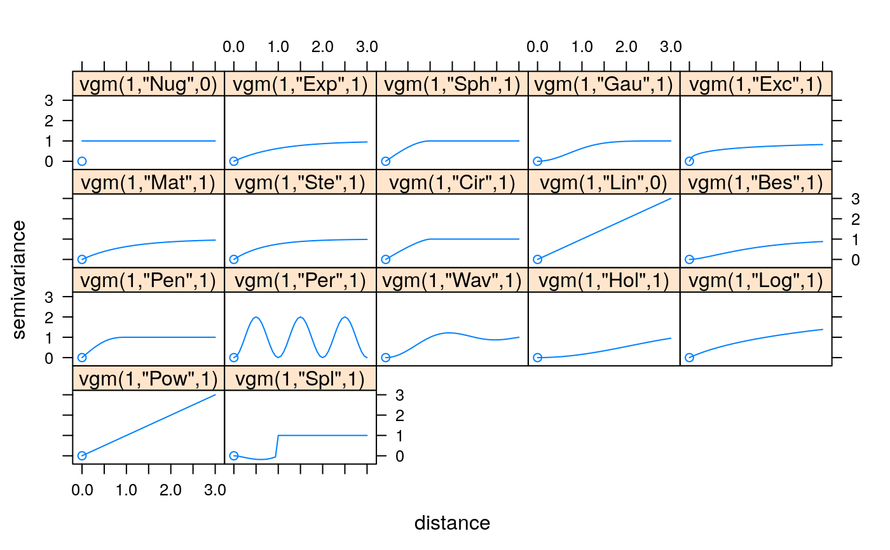
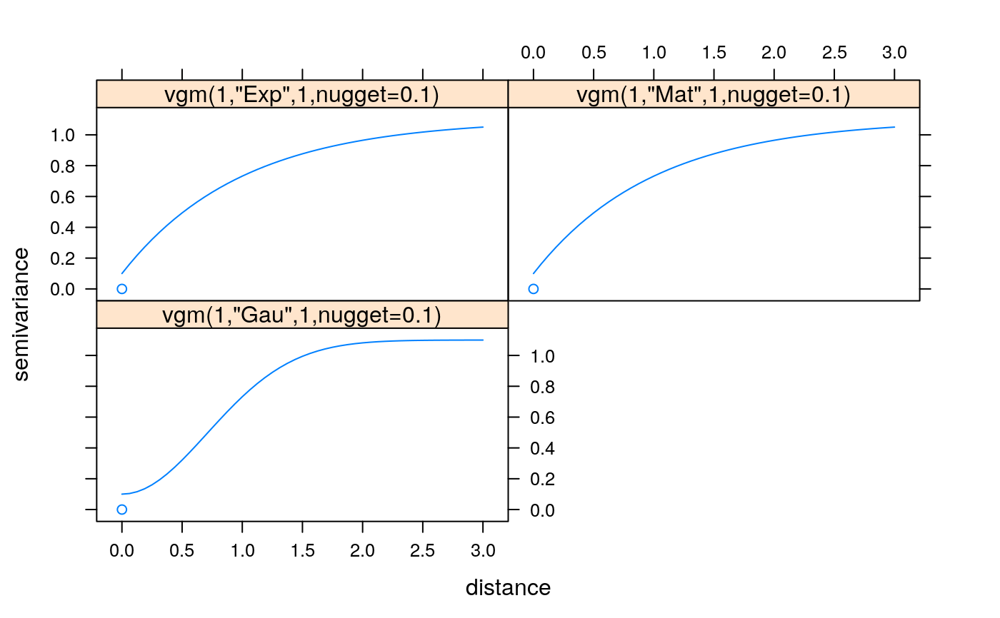
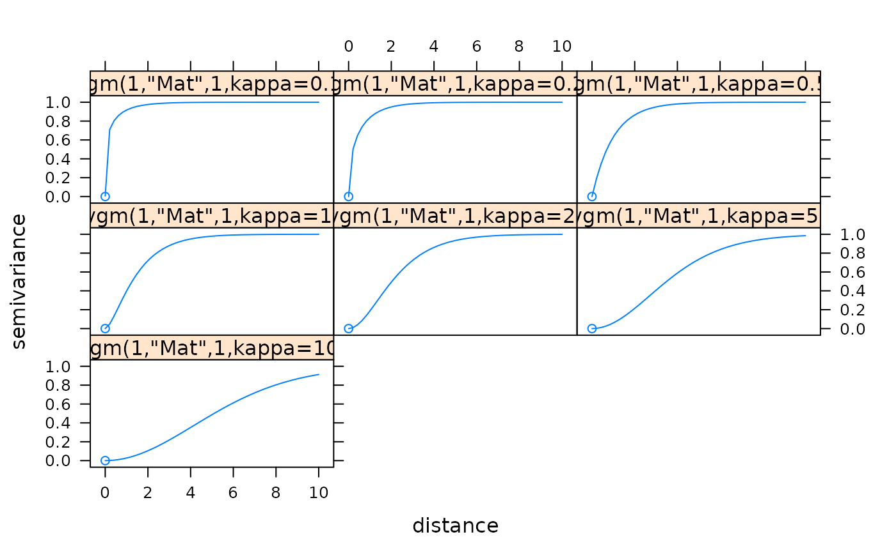
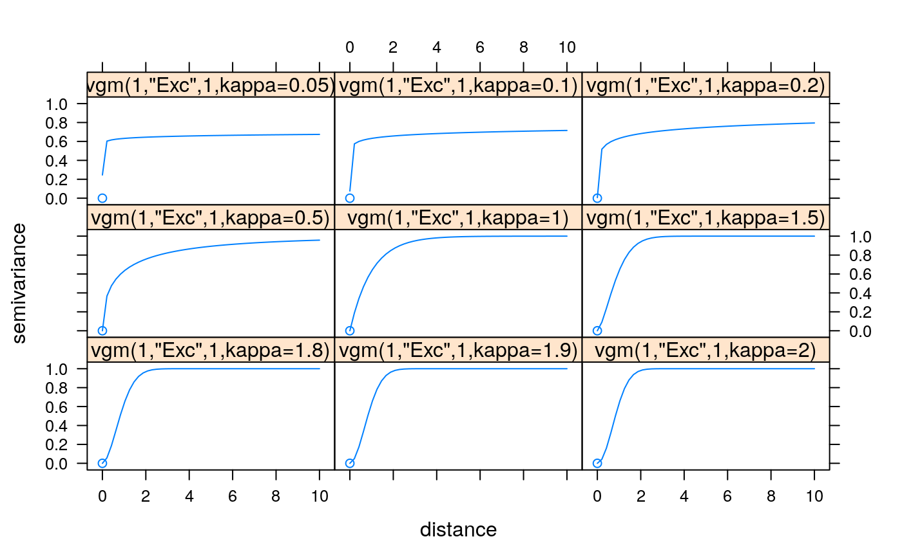
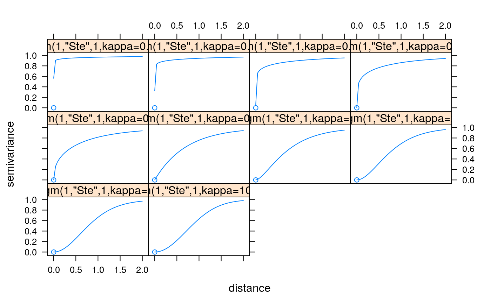

show.vgms.RdCreates a trellis plot for a range of variogram models, possibly with nugget; and optionally a set of Matern models with varying smoothness.
show.vgms(min = 1e-12 * max, max = 3, n = 50, sill = 1, range = 1, models = as.character(vgm()$short[c(1:17)]), nugget = 0, kappa.range = 0.5, plot = TRUE, ..., as.groups = FALSE)
| min | numeric; start distance value for semivariance calculation beyond the first point at exactly zero |
|---|---|
| max | numeric; maximum distance for semivariance calculation and plotting |
| n | integer; number of points to calculate distance values |
| sill | numeric; (partial) sill(s) of the variogram model |
| range | numeric; range(s) of the variogram model |
| models | character; variogram model(s) to be plotted |
| nugget | numeric; nugget component(s) for variogram models |
| kappa.range | numeric; if this is a vector with more than one element, only a range of Matern models is plotted with these kappa values |
| plot | logical; if TRUE, a plot is returned with the models specified; if FALSE, the data prepared for this plot is returned |
| ... | passed on to the call to xyplot |
| as.groups | logical; if TRUE, different models are plotted with different lines in a single panel, else, in one panel per model |
returns a (Trellis) plot of the variogram models requested; see examples. I do currently have strong doubts about the ``correctness'' of the ``Hol'' model. The ``Spl'' model does seem to need a very large range value (larger than the study area?) to be of some value.
If plot is FALSE, a data frame with the data prepared to plot is being returned.
the min argument is supplied because the variogram
function may be discontinuous at distance zero, surely when a positive
nugget is present.
show.vgms()show.vgms(models = c("Exp", "Mat", "Gau"), nugget = 0.1)# show a set of Matern models with different smoothness: show.vgms(kappa.range = c(.1, .2, .5, 1, 2, 5, 10), max = 10)#> Warning: number of items to replace is not a multiple of replacement length#> Warning: number of items to replace is not a multiple of replacement length#> Warning: number of items to replace is not a multiple of replacement length#> Warning: number of items to replace is not a multiple of replacement length#> Warning: number of items to replace is not a multiple of replacement length#> Warning: number of items to replace is not a multiple of replacement length#> Warning: number of items to replace is not a multiple of replacement length# show a set of Exponential class models with different shape parameter: show.vgms(kappa.range = c(.05, .1, .2, .5, 1, 1.5, 1.8, 1.9, 2), models = "Exc", max = 10)#> Warning: number of items to replace is not a multiple of replacement length#> Warning: number of items to replace is not a multiple of replacement length#> Warning: number of items to replace is not a multiple of replacement length#> Warning: number of items to replace is not a multiple of replacement length#> Warning: number of items to replace is not a multiple of replacement length#> Warning: number of items to replace is not a multiple of replacement length#> Warning: number of items to replace is not a multiple of replacement length#> Warning: number of items to replace is not a multiple of replacement length#> Warning: number of items to replace is not a multiple of replacement length# show a set of models with different shape parameter of M. Stein's representation of the Matern: show.vgms(kappa.range = c(.01, .02, .05, .1, .2, .5, 1, 2, 5, 1000), models = "Ste", max = 2)#> Warning: number of items to replace is not a multiple of replacement length#> Warning: number of items to replace is not a multiple of replacement length#> Warning: number of items to replace is not a multiple of replacement length#> Warning: number of items to replace is not a multiple of replacement length#> Warning: number of items to replace is not a multiple of replacement length#> Warning: number of items to replace is not a multiple of replacement length#> Warning: number of items to replace is not a multiple of replacement length#> Warning: number of items to replace is not a multiple of replacement length#> Warning: number of items to replace is not a multiple of replacement length#> Warning: number of items to replace is not a multiple of replacement length